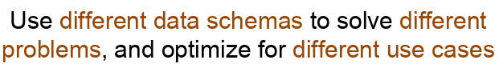
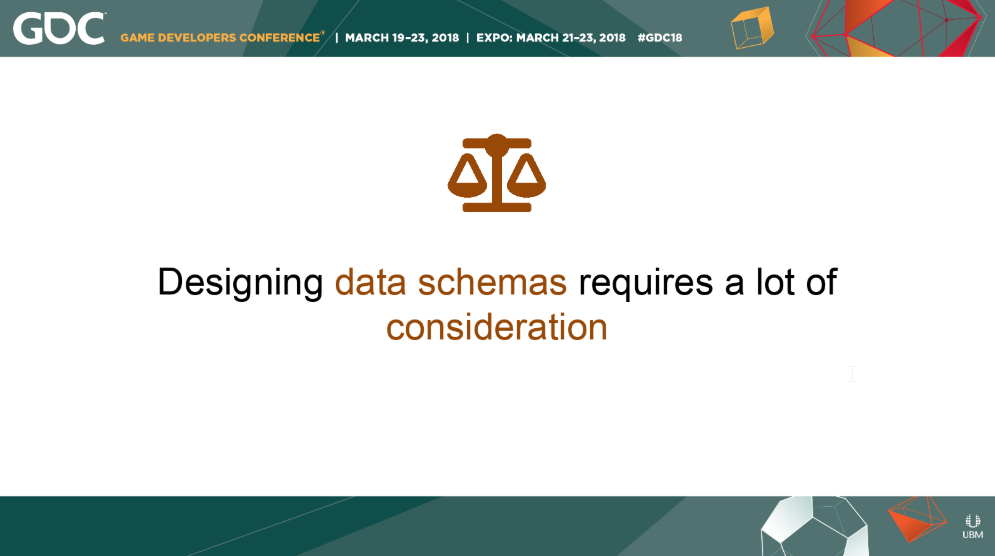
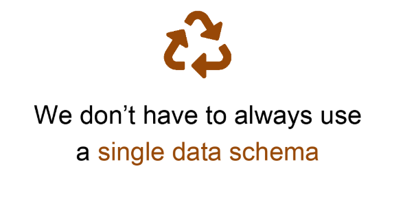

Notes for "A Tale of Three Data Schemas"
GDC 2018, Tools Tutorial Day, Ludovic Chabant, Senior Software Engineer @ Electronic Arts Vancouver shared the know-how of the Frostbite engine team when it comes to designing the game’s data.
Main Takeaway
The same data is used in different ways. Optimizing the data’s logical representation for different usage scenarios is key in achieving great performance, efficient use of storage and a sublime user experience. The way that an artist thinks of the data that he or she sees in the editor window might not be the best way to represent the data to load it as fast as possible into the game or might not be the best way to store it on disk. Different data consumption scenarios demand different optimization. Off course maintaining more than one data layout isn’t free but it is worth the investment.

Data Schema
Definition: a data schema is the formal description of the structures a system is working with.
Examples of data schemas
- Public properties of script components in Unity
- Decorated public properties of a UClass in Unreal Engine
- Blind Data in Maya
- Table columns in a database management system
- Frostbite DDF (Data Definition Format)
Basic idea
A data schema is a for communicating about the existence of a type of something which has:
- properties like
- ints
- floats
- etc.
- references to other types
Usage scenarios
A data schema is used to:
- display a type’s properties in an editor context.
- store the type on disk.
- load the type at runtime.
Designing a data schema

If you design a data schema with a programmer bias you will get a data schema that will be great for loading at runtime.
It will be:
- flat and packed
- optimized for loading
- unintelligible for designers and artists
If you design a data schema with a content creator bias you will get a data schema that will be great for human understanding and iteration.
It will be:
- easy to use and edit by multiple people
- not cache friendly
- not efficiently laid out in memory
Three different data schemas

Runtime data schema
used by
- the game for loading the data into memory
- the programmers in the code
purpose
- performance
- patching
- loading
- nicely packed in memory
optimized for
- reading
Storage data schema
the tools backend a.k.a disk version
used by
- tools to save users work on some form of persistent storage
purpose
- can be versioned and easily merged in revision control
- can be used by tools for automation
- supports multi-user editing (splitting into different parts)
- for example, the runtime data schema doesn’t need this
optimized for
- writing to disk
Tool data schema
the tools frontend
used by
- content creators for content creation
- engineers for analysis and decision making
- tools developers for creating a great editing experience
purpose
- better understanding by humans
- better UX
- workflow and iteration oriented
optimized for
- editing
- iteration
Frostbite Engine tails
Ludovic brings up 4 tails about how the 3 data schemas are used in the Frostbite Engine.
The main points of the tails:
- Use a more user-friendly data schema for user editing, but keep an eye out for where you do the conversion from one data schema to another.
- Use different data schemas to solve different problems, and optimize for different use cases.
- UX and Data Schemas have a strong relationship. Changing one might affect the other.
- Use conditional compilation to include tools/storage data schemas in the runtime data schemas. Conditionally include appropriate pipeline code in the runtime to transform data on the fly during live-edit.
The most important Data Schema
The Storage Data Schema is the most important Data Schema. It is only Data Schema that is persistent.
Designing Data Schemas
- Start with designing the Storage Data Schema
- Build your Tools around the Storage Data Schema
- Implement your Runtime Code around the Storage Data Schema
- if it is obvious that the Storage Schema is not performant enough go to the next subsection to find out how to deal with it
Dealing with performance issues
If the Runtime Data Schema is not performant enough
- Adjust the Runtime Data Schema and the code
- Write the pipeline code to convert from the Storage Schema to the Runtime Schema
Mixing Data Schemas
If your engine does not formally support different types of data schemas, use conditional compilation to have ways to remove the Tools/Storage Data Schemas from the production build.
What we have learned
- There are different ways to organize the same logical data (Tools, Storage, Runtime)
- Use more user-friendly data organization for the users of your Tools and a more performant way of data organization for your Runtime
- With this way of organizing data, you can solve different problems without a lot of sacrifices
- Always remember that a change in a Data Schema can lead to a change in the UX of a tool and vice versa
- Have a pipeline in place to convert from the Storage Schema to the Runtime Schema
Personal notes
This reminded me of Mike Acton’s Data-Oriented Design talk where every problem in programming is a data transformation problem.
Mindmap / Mental Representation
You can open the file with XMind
The Toolsmiths
 Ludovic Chabant is a member of the Toolsmiths community. The Toolsmiths are a community of Game Tool Developers that are passionate about improving the way people make games.
Ludovic Chabant is a member of the Toolsmiths community. The Toolsmiths are a community of Game Tool Developers that are passionate about improving the way people make games.
Join us on Slack.
Join us on Twitter.
Links
- Slides: A Tale of Three Data Schemas
- GDC Vault Video: A Tale of Three Data Schemas
- Ludovic Chabant on Twitter